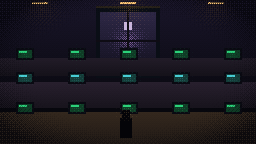
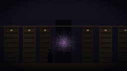

Systems, AI & the
machinery beneath play
I'm Sanjay Jacob Sulegonker — a gameplay systems and AI engineer, and solo developer of Desk 42. This is the bureau: a curated set of technical artifacts documenting the architecture, AI and mathematical systems behind my work, prepared as evidence of exceptional promise in digital technology.
Six technical artifacts
Each artifact is a self-contained dossier. The Systems Architecture file is authorised and operational; the remainder are sealed and in production from the same source material.
The dependency graph of Desk 42 — 13 divisions, the Rumor Mill event bus, and six load-bearing systems. Grounded in the real source tree.
Player-modifiable behaviour trees, Markov client prediction, a PID difficulty controller, HMM inference and chaos-driven variance.
Fuzzy logic, Markov chains, PID, the logistic map, Bayesian networks, queueing theory and MAUT — the maths driving game behaviour.
A personal portfolio across projects — systems built, problems solved, and the through-line of the work.
Delivery planning for Desk 42 and Kindred Siege — Gantt timelines and feature tiers, Jan 2025 → Q4 2027.
The research-to-product pipeline — timeline, concept mapping and impact statement linking academic work to shipped systems.

Something in the filing is not filing back
The deeper systems hold. The deeper records do not. Engineering discipline is what keeps the machine standing while the archive misbehaves.
Why this clears
The case for exceptional promise in digital technology — depth, applied AI, and production rigour, delivered solo.
Depth, solo
A complete, layered game architecture — AI, state machines, adaptive difficulty, persistence — designed and built by one engineer.
Applied AI & maths
Behaviour trees, Markov models, PID control and chaotic systems used not as buzzwords but as shipped, load-bearing mechanics.
Engineering rigour
Assembly-enforced boundaries, automated tests and CI — production discipline applied to an independent project.